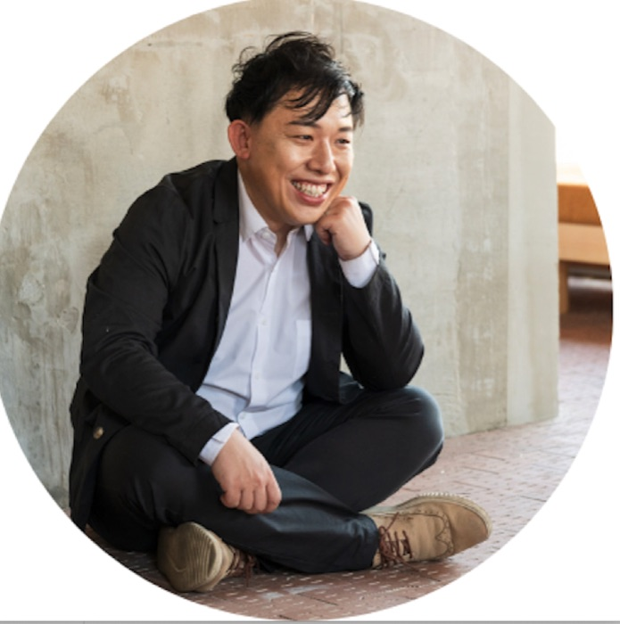
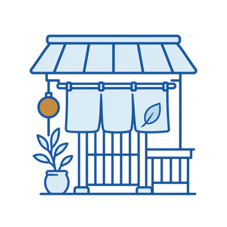
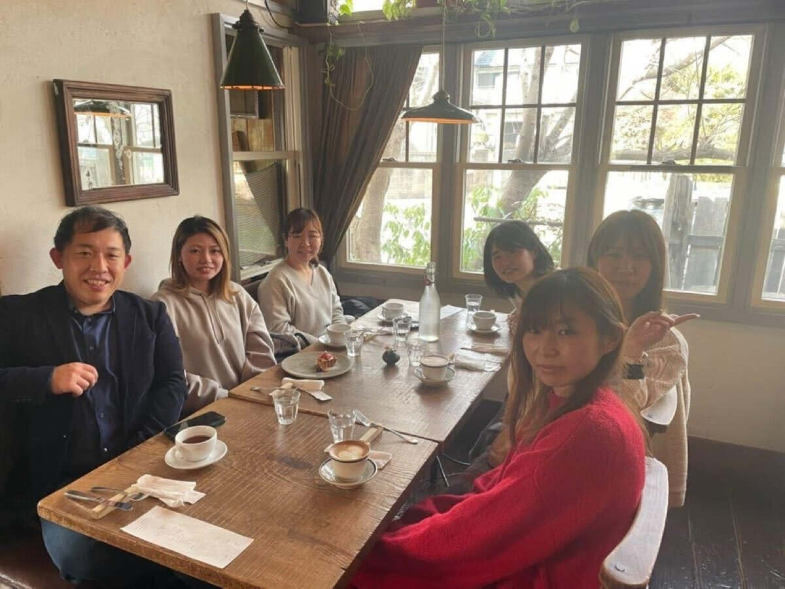
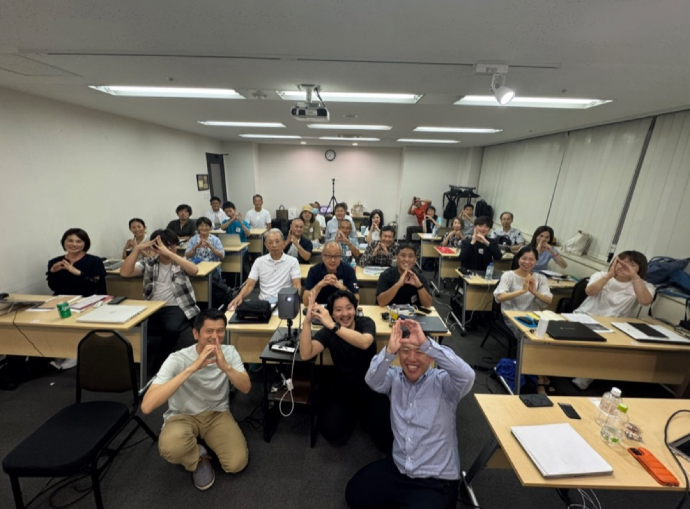
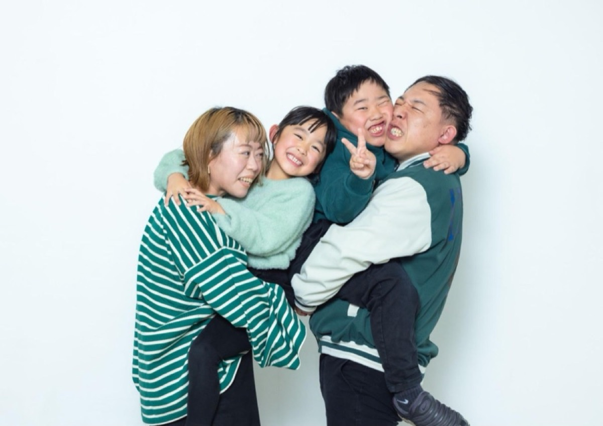
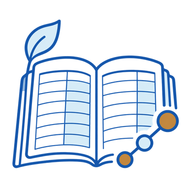
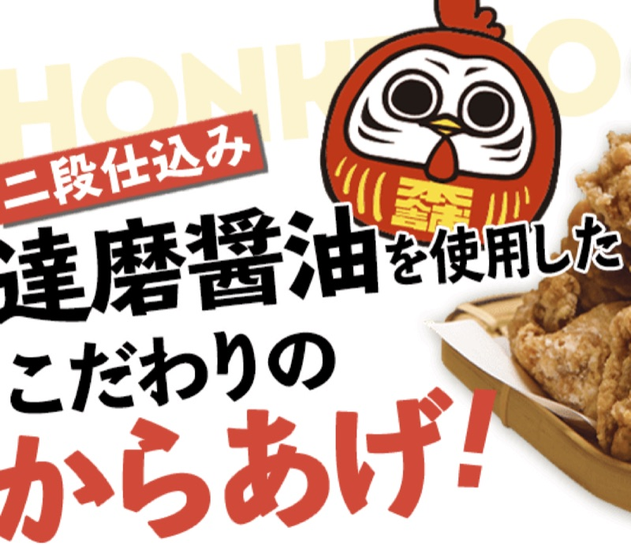
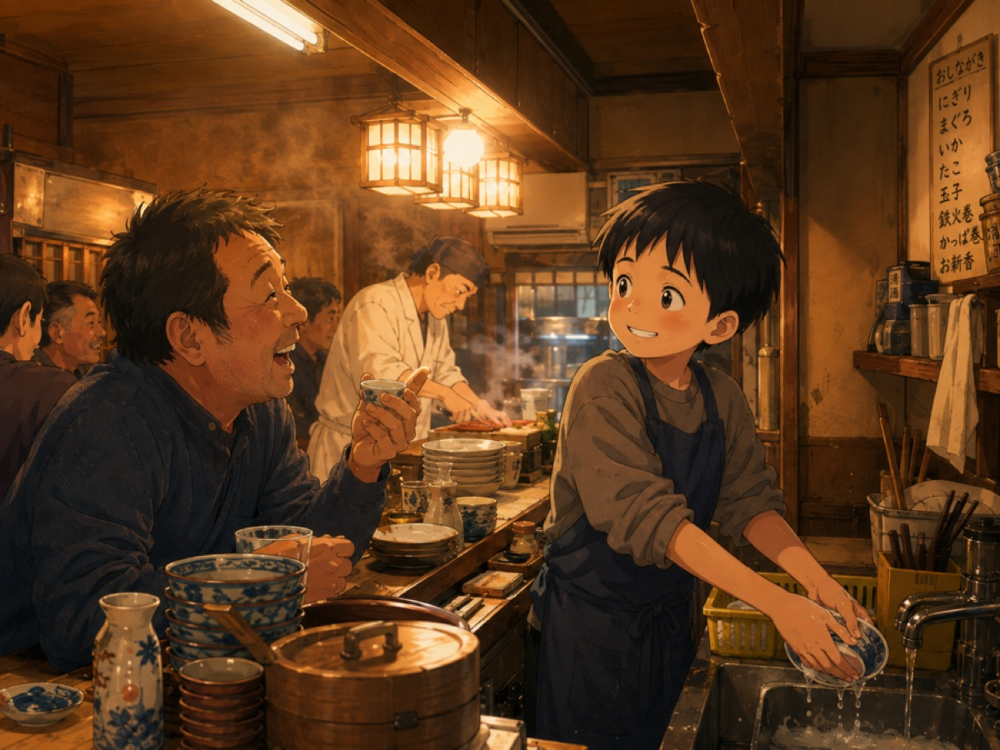

BNI Trust Chapter — 1to1 Sheet
合同会社LMJ 代表 ／ 飲食店専門の経理代行 ／ 茨城県筑西市（オンラインで全国対応）
経理の重荷を引き受けて、
社長とご家族に「安心」を渡す。

Why
実家は寿司屋でした。父が握り、母が経理。毎年3月になると、母がレシートの山と格闘していました。
数字が苦手な母を助けたくて、高校は商業科へ。高校2年生のとき、先生や商工会議所に聞きながら、実家の確定申告を自分で作って提出しました。
あのとき母に渡したかったのは「安心」でした。
ガソリンスタンド、ラーメン店のエリアマネージャーを経て、31歳ではじめて経理の実務に触れました。転機は「経理担当が突然辞めた会社」に助っ人で入ったこと。現場の相談が全部集まるようになり、顧問税理士の先生に背中を押されて独立しました。
一度、会社を急に大きくしようとして人を傷つけたことがあります。お金の失敗は取り返せても、人の心は元に戻りません。だから社員さんにも「この会社で働けてよかった」と思ってもらえる会社をつくると決めています。



How
「安心」を渡すために、この3つを毎回守っています。

What
飲食店専門の経理代行です。決算をお願いしている税理士の先生は、そのままで大丈夫です。
建設・建築業の経理はお引き受けしていません。
Who I Help
金の卵 ①
飲食店のオーナー社長
経理を「奥様」か「担当者1名」に任せている会社
とくに、「家族に数字を背負わせていて申し訳ない」と感じている社長。同じことを大切にしている方なので、話が早く進みます。
金の卵 ②
税理士の先生
AI・DXを進めたいけれど、手が回っていない事務所
Thank You
ご紹介くださった皆さま、本当にありがとうございます。
公認会計士の先生
税理士の先生
メンバーのご家族が働く会社
Listen For
このどれかが聞こえたら、私の出番です。
How To Tell
「聞き逃してはならないフレーズ」が出たら、一歩だけ踏み込んでみてください。
痛みを具体的に話し始める
「担当が今月末で辞める」「試算表が遅れて銀行に出せない」など、期限や固有名詞が出てくる
「いくらで、どこまでやってくれるの？」
価格や範囲を聞いてくる
社長本人が「自分の時間を経営に使いたい」
この状態なら、ぜひ私に繋いでください
「便利そうだね」「今度話聞かせて」で終わる
日程の話にならないときは、そのまま置いておいてください
話しているのが奥様やご担当者だけ
経理の人が辞めた瞬間に、また思い出していただければ十分です
Referral Sources
記帳を手放したい先生
記帳代行の受け皿を探している事務所です。先生が「記帳までは手が回らない」と言った瞬間が出番です。
店舗展開の入口
店舗を増やしている会社と、必ず接点があります。
現場に毎日いる人
複数店舗の経営者と、日常的に会っています。
Copy & Send
お心当たりの方が浮かんだら、相手に合う文面を選んで、そのまま送ってください。
入れると、全ての文面の「○○」がそのお名前に変わります。「さん」「先生」は文面に入っているので、苗字だけで大丈夫です。
ターゲット：経理を奥様に任せている飲食店のオーナー社長（1店舗から対象）
この文面を送る（語尾や言い回しは、ご自分の言葉に直してOKです）○○さん いつもお世話になっております。 先日、経理は奥様がされているとお聞きしました。 お店を手伝いながら、夜にレシートや請求書をまとめるのは大変ですよね。 私の知り合いに、石島さんという飲食店専門の経理代行の方がいます。 石島さんのご実家はお寿司屋さんで、お母様が毎年レシートの山と格闘していたそうです。 その姿を見て、高校生のときに実家の確定申告を自分で作って出したのが、経理を始めたきっかけだと聞きました。 石島さんに頼むと、奥様は毎日の売上と仕入を送るだけになります。 レシートの整理や入力、請求書のやり取りは、石島さんの側で引き受けてくれます。 税理士の先生も、そのままで大丈夫です。 「奥さんに少し余裕を作ってあげたいな」と思われたら、ひと声ください。 石島さんにおつなぎします。
ターゲット：経理を担当者1名に任せている飲食店のオーナー社長（1店舗から対象）
この文面を送る（語尾や言い回しは、ご自分の言葉に直してOKです）○○さん いつもお世話になっております。 先日、経理はご担当の方がお一人で見ているとお聞きしました。 お一人だと休みが取りづらく、数字を確認してくれる人もいないので、 ご本人も社長も、どこかで不安を抱えていますよね。 その方が体調を崩したら、お金の流れが止まってしまうこともあります。 私の知り合いの石島さんは、飲食店専門の経理代行の方です。 担当の方と一緒に、二人目の経理として入ってくれます。 お一人に背負わせずに済むので、担当の方も安心して休めるようになります。 石島さん自身、経理担当が突然辞めた会社に助っ人で入ったのがきっかけで独立された方です。 「あの人にしか分からない仕事があるな」 「休ませてあげたいけど、代わりがいないな」 そう思われたら、ひと声ください。石島さんにおつなぎします。
ターゲット：記帳代行を手放したい、またはキャパオーバーの税理士の先生（＝案件を渡していただくお繋ぎ）
この文面を送る（語尾や言い回しは、ご自分の言葉に直してOKです）○○先生 いつもお世話になっております。 先日、記帳まで手が回らないとお聞きしました。 繁忙期に記帳があふれると、先生ご自身の時間がなくなってしまいますよね。 私の知り合いの石島さんは、経理代行を10年されている方です。 先生のお客様の記帳を、先生の手前で引き受けてくれます。 お客様とのお付き合いは先生のままで、先生は確認とご判断に集中できます。 数件から試せるそうです。 「この記帳、誰かに任せられたらな」と思われたら、ひと声ください。 石島さんにおつなぎします。
ターゲット：40代〜50代の税理士事務所の先生。人は増やしたくないが業務効率を上げたい／DX・AI化を進めたいが自分では進められていない
この文面を送る（語尾や言い回しは、ご自分の言葉に直してOKです）○○先生 いつもお世話になっております。 先日、事務所の業務効率のお話をお聞きしました。 AIの活用をご一緒できそうな方がいるので、ご紹介させてください。 石島さんという方で、経理代行を10年されています。 マネーフォワードやfreeeとAIをつないで、記帳の作業そのものを自動化する仕組みを作っています。 ご自身の会社でも、ITが得意ではないパートさんがAIで実務を回せるところまで育てたそうです。 事務所の中の作業を一緒に減らす、協業のご相談です。 「入力作業に人を取られているな」 「AIを入れたいが、手が回らないな」 そう思われたら、ひと声ください。まずは情報交換から、とのことです。
Voices
どんな方の、どんな困りごとが、どう解決したのか。合同会社LMJの公式サイトに掲載しているお客様の声から整理しました。
年商5億円規模の飲食店の社長
16店舗を展開する飲食店の社長
エステサロンの社長
従業員を抱える会社の社長
リセール事業の社長
オンラインサロンの運営者
グラフィックデザイナー
フリーカメラマン
Please Don't Worry
お気遣いは不要です。以下は繋いでいただかなくて大丈夫です。
迷ったら、無理に出さず先に一声かけてください。そのほうがお互いの時間が守れます。
1to1 Sheet & GAINS
BNIの公式書式に沿った内容を、そのままご覧いただけます。
| 所属リージョン | 横浜セントラルリージョン |
|---|---|
| 所属チャプター | Trustチャプター（ディレクター：三宅 健一さん） |
| 名前 | 石島 亮太（いしじま りょうた） |
| カテゴリー | 飲食店専門の経理代行 |
| BNI加入 | 2026年5月1日 |
| facebook.com/ryota.challenger |
| 事業 | ① 経理代行（合同会社LMJ）― 本業。飲食店に特化 ② AI研修 ― 趣味が講じて、いまは上場企業の部署にも入っています |
|---|---|
| 所在地 | 茨城県筑西市 ／ 対応範囲はオンラインで全国 |
| 専門分野 | 飲食店の経理・総務・人事の代行と、資金繰り・財務の相談 |
| 経験年数 | 10年（2016年開業） |
| 過去に経験した職業 | ラーメン店のエリアマネージャー、ガソリンスタンド、パチンコ店ほか、ほぼサービス業ばかり20職種ほど |
| 家族 | 妻・長男（11歳・小5）・長女（8歳・小3）の4人家族。妻は飲食店専門のデザイン会社でチーフデザイナーをしています（担当先に115店舗・130店舗規模のチェーンあり） |
|---|---|
| 出身・居住 | 滋賀県高島市 出身／茨城県筑西市 在住（関東歴13年） |
| 人生の目標 | 「誰かの支えになり、『出会えてよかった』と思われる人になる。」 |
| 趣味 | AI ／ ゲーム（ドラクエ・龍が如く） ／ 車（次はミニクーパーを狙っています）。AIは子どもとのコミュニケーションの道具でもあります |


Goals目標 |
|
|---|---|
Accomplish |
|
Interests興味 |
|
Networks人脈 |
|
Skillsスキル |
|
Wish強い願望 | 社員さんやスタッフさんが「この会社で働けてよかった」と感じられる会社にすること。「自分の人生にこの会社が必要だ」と感じてもらえたら100点！ |
Secret誰も知らない私 | 実は、コミュニケーションが苦手です。実家の寿司屋で、小学生の頃からカウンターの常連さんの話し相手をしていました。酔ったお客さんには、ニコニコうなずくだけで会話が成り立ちます。表面的な会話は得意でも、相手に深く興味を持って尋ねるのは苦手なまま。だからBNIは自分を育てる場だと思って入りました。 |
Key私の成功の鍵 | まずは人としての在り方。お客様に喜ばれ、満足していただくことを積み重ねる。最大の報酬は「次のお仕事の受注」だと思っています。 |